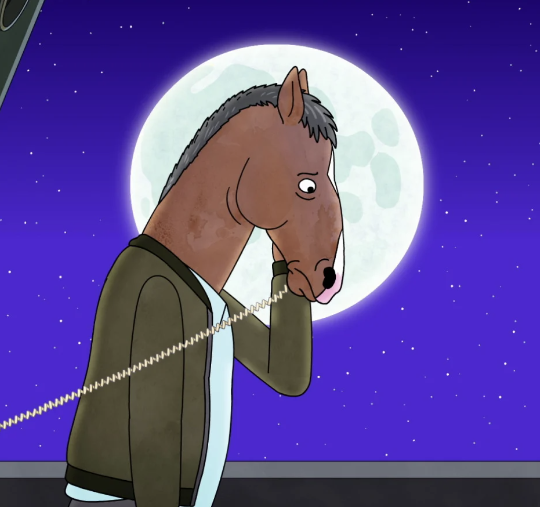
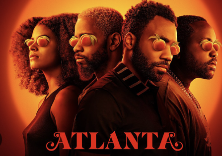
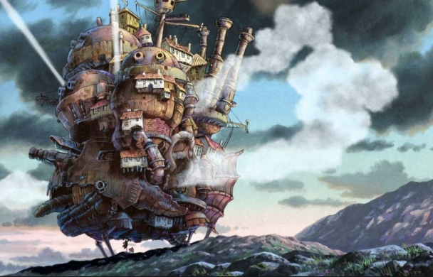
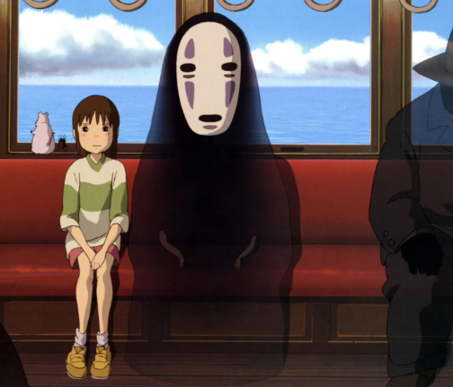
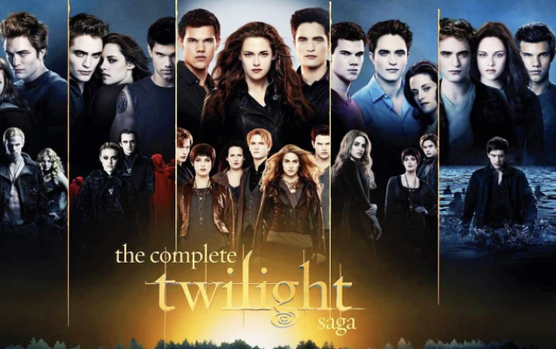
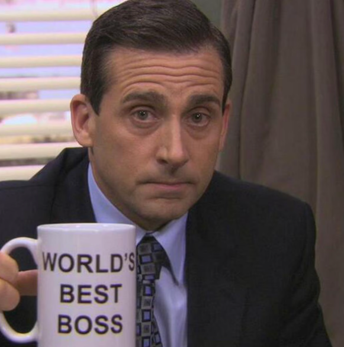
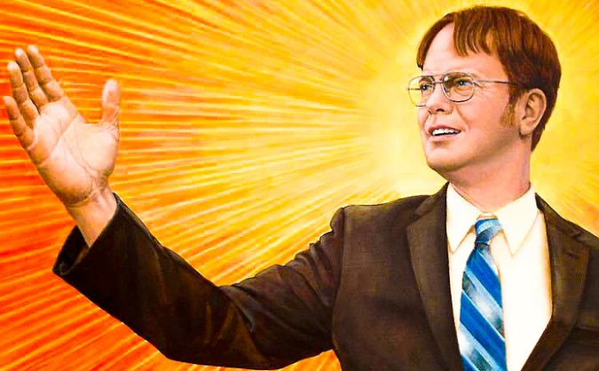
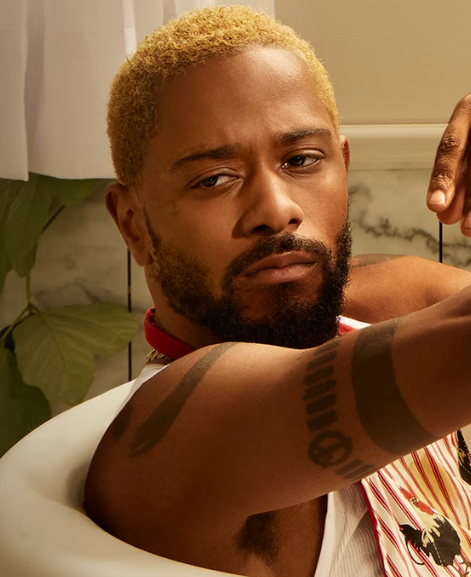

Películas y series favoritas
Esta es mi lista de películas series favoritas.
- The office.
- Bojack Horseman. 
- Atlanta. 
- El increíble caatillo vagabundo. 
- El viaje de Chihiro. 
- Crepúsuclo(La saga commpleta). 

De las cosas que más me gusta cocinar sin duda son los postres pues existe una gran variedad de los mismos, no todos lospostres son dulces también existen salados, pero simplemente considero que se le puedes decir postre a cualquier comida que se sienta como un premio y lo ocupes para finalizar ya sea tu desayuno comida o cena. Esta definición que encontré me gustó mucho: los postres son frutas o platos dulces que se sirven después de las comidas. Para algunas personas la hora del postre forma parte del momento más atractivo de la comida, ya que suelen ser los platos más coloridos de la mesa. Además, son un acompañamiento en cualquier momento del día, son dulces y en algunos casos agridulces. El postre que mas disfruto hacer es el fan, de verdad lo amo tanto porque tiene otra presentación que es pastel imposible en el cual se le agrega pastel de chocolate sin duda de los mejores postres.
Esta es mi lista de películas series favoritas.
Tengo un motón de comidas favoritas, muchísimas así que solo pondrá cinco, realmente no creo que sean las que mas me gustan si no as que llegaron primero a mi cabeza.

| Nombre | Foto | Explicación |
|---|---|---|
| Michael Scott |  | En resumidas palabras hablare de Michael Scott porque necesito mínimo una hora, es un personaje el cual les parece insoportable amuchas personas en especial en la primera temporada, lo cual puedo entender, pero a mí siempre me encanto. El personaje es una jefe que está dispuesto a todo para ser amigo de sus empleados, el tipo de jefe que el siempre quiso tener, hace chistes incorrectos que de verdad son muy divertidos y siempre se preocupa por las personas que mas ama. Existen episodios que no los puedo ver por las situaciones incomodad en las que el mismo se mete, pero sin duda amo plenamente a este personaje. |
| Dwight Schrute |  | Dwight Schrute sin duda de los mejores personajes, el amor que tengo por el es incomprensible, dio uno de los episodios más memorables de toda la serie convirtiéndose es uno de mis personajes favoritos. Su personalidad es difícil de describir, pero sin duda es una persona muy buena que siembre esta para sus amigos. |
| Darius |  | Darius es el amor de mi vida, una persona, sabe lo que quiere, muy relajado y siempre tiene las palabras correctas para ti. Tiene la mejor vibra del mundo, simplemente es increíble también cree en historias de conspiración de una manera muy real, lo amo. |
| Bojack Horseman | De este de plano ni yo sé porque está aquí. |
Tengo fácil más de treinta canciones favoritas poque disfruto mucho la música de cualquier tipo así que continuación compartiré una lista de las seis que mas escucho.


Mentira en este orden.